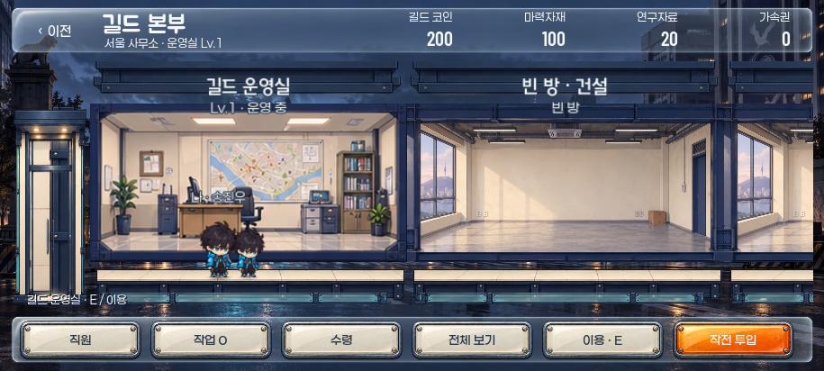

직접 걸어 다니는 길드 본부
서울·SD 화풍 · 연결된 2층 8칸 · 방 클릭 후 걸어가서 이용 · 직원 자동 근무

직접 확인: 탐색기에서 Preview-Guild-Walk.cmd를 더블클릭하세요. A/D·방향키 이동, 방 클릭 자동 이동, E 이용, 승강기 앞 위/아래 이동, Escape 관리창 닫기입니다.
2026-10-04 사용자가 승인한 시안으로 현재 워크트리의 길드 진입 경로에 연결했습니다. 실제 게임은 저장하며, 위 Preview 실행용 파일은 사용자 저장을 쓰지 않는 독립 메모리 본부입니다. 기존 길드 저장은 다시 초기화하지 않습니다.